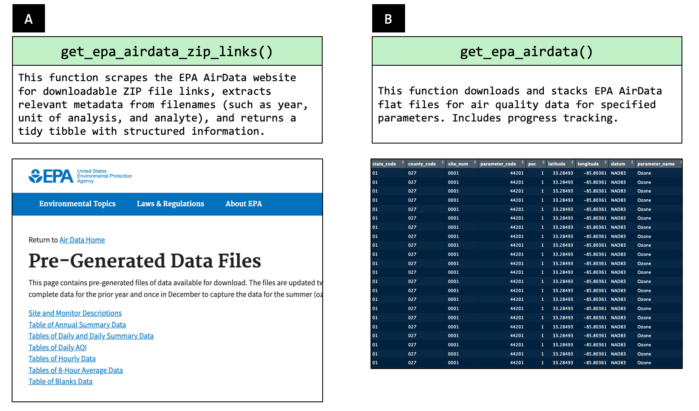

Summary
Understanding air quality is essential for public health, environmental policy, and research. The tidypollute R package currently provides tools to efficiently work with EPA AirData flat files [@epa_airdata], offering a structured approach to importing, cleaning, and analyzing air pollution data. This package is designed for environmental researchers, policymakers, and analysts who need streamlined access to large-scale air quality datasets without the overhead of direct API calls.
tidypollute packageThe package, published with a GPL-3 license, facilitates efficient data handling of air quality measurements such as PM2.5, ozone, NO2, CO, and SO2, and others. It allows users to explore long-term trends, compare geographic variations, and generate custom summaries.
For possible analyte codes, please see tidypollute::get_epa_airdata_analyte_codes().
For the rest of the documentation, please visit: [@tidypollute_docs]
-
Current Features:
-
Efficient EPA AirData import: Load and preprocess flat files by specifying the analyte (e.g., “44201” for ozone), the start and end of the year query (e.g.,
start_year=1991,end_year=2000), and the frequency (e.g.,freq= “hourly”, “daily”, “annual”) to the function,get_epa_airdata(). -
Automated metadata scraping: The function
get_epa_airdata_zip_links()gathers up-to-date links to AirData files (along with archives through 2024 as built in datasets), andget_epa_airdata_analyte_codes()to gather the various file types in a handy table (i.e., tibble). -
Streamlined bulk downloads:
download_stack_epa_airdata()enables batch downloading of multiple datasets. All you need is a data.frame (or tibble) with a column namedurlfor download. This means you can download, for example, 1991 Ozone data and 2001 Particulate Matter, PM2.5 data. -
Built-in EPA dataset archives:
epa_airdata_links,epa_airdata_monitoring_sitesandepa_superfund_npl_sites, to name a few. - Access to Wearable Air Quality data from Wearables for sensor data from your fleet or research project. This currently supports the Atmotube Pro device. An API Key is required from Atmotube.
-
Efficient EPA AirData import: Load and preprocess flat files by specifying the analyte (e.g., “44201” for ozone), the start and end of the year query (e.g.,
-
Planned Enhancements:
- Integration with real-time API endpoints and additional environmental datasets (e.g., water quality).
- Expansion to support non-U.S. and other wearable air quality data sources (e.g., Purple Air, Flow2).
- Visualization tools for spatial and temporal trends.
There are several datasets hosted inside of this package.
- The
epa_airdata_monitoring_sitesdataset contains metadata for EPA AirData monitoring sites (as of February 5, 2025). - The
epa_airdata_linksdataset contains links to all pre-generated flat files, whileepa_airdata_links_archivecontains links to flat files, as archived by Archive.org. - The
epa_superfund_npl_sitesdataset contains metadata for Superfund sites (as of February 5, 2025). - The
us_statesdataset containing basic metadata about states (e.g., abbreviations, size, region)
For help getting started, please see the vignettes included with this package.
Statement of Need
Air quality is a critical factor influencing public health, yet analyzing EPA AirData can be cumbersome due to the size and complexity of raw datasets. Many existing tools focus on API-based retrieval, but large-scale historical analyses often require working directly with the flat files provided by the EPA.
The tidypollute package aims to address this gap by:
-
Providing structured functions to load and process EPA flat files efficiently
-
Reducing barriers for researchers and analysts who may not have experience with raw EPA data processing
- Enhancing accessibility to environmental data for public health, environmental policy, and research.
- Laying the groundwork for future environmental data integrations
By offering a lightweight yet powerful R package, for now, tailored for EPA AirData [@epa_airdata], this project aims to support users to make data-driven decisions regarding air quality policy, environmental exposures, and public health.
If anyone’s research depends on air quality data, this tool would make seamless the download and backup of this data, with just one line of code.
Figures
 Figure 1. Primary functions from this package and their results. Panel A depicts the function that parses the AirData flat file home page for zip file links. Panel B depicts the one-liner R function that downloads the flat files for a specific analyte.
Acknowledgements
The development of tidypollute was made possible with support from NIA (P01-AG003949) and Dr. Roque’s PSU Start-up funds. Thank you Dr. Charles B Hall, Dr. Dean Hosgood, and Hailey Andrews, for your support and manuscript reads. Thank you Dr. Alexis Santos-Lozada and Dr. Johnny Felt for function name brainstorming. Thank you, Hailey Andrews, for helping brainstorm the name of this package. Thank you, Karishma Christmas, for your documentation support.